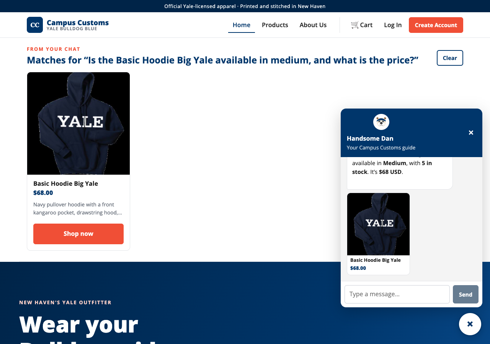
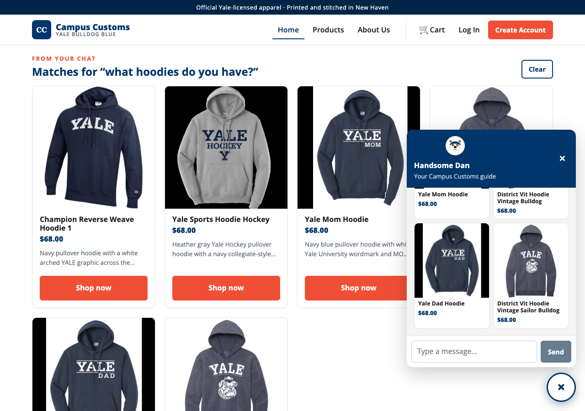
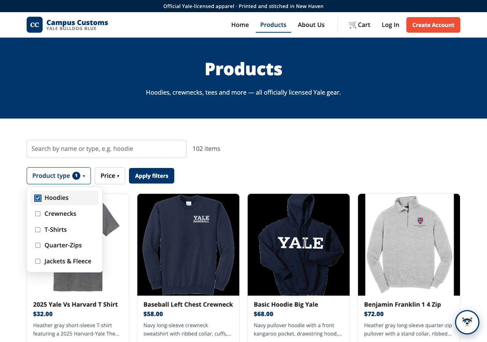

This page documents three checks run against the live Campus Customs site, each with a
screenshot and a short note on what it proves. The data (prices and stock) comes from the
local SQLite database campus_customs.db; the chatbot is a PydanticAI agent that
reads that database through tools, so every price and stock figure it states is real.
Honest stock & price from the database
Handsome Dan (the chat assistant) is asked whether the Basic Hoodie Big Yale
is available in Medium and its price. He answers
“available in Medium, with 5 in stock. It’s $68 USD.” — read live from the
inventory and catalogue tables (M = 5 units, price $68), not guessed.

Category question → product cards appear on the page
Asking “what hoodies do you have?” in the chat makes the agent search the catalogue and the website renders the matching items as product cards under a “From your chat — Matches for …” band. The cards are clickable and each opens that product’s detail page.

Filter the products by type and price
On the Products page, the Product type and Price dropdowns are checkbox filters. Here “Hoodies” is ticked; clicking Apply filters narrows the 102-item grid to just hoodies. This is one of the Problem 9 usability improvements (it combines with the search box, and a Clear button resets it).
